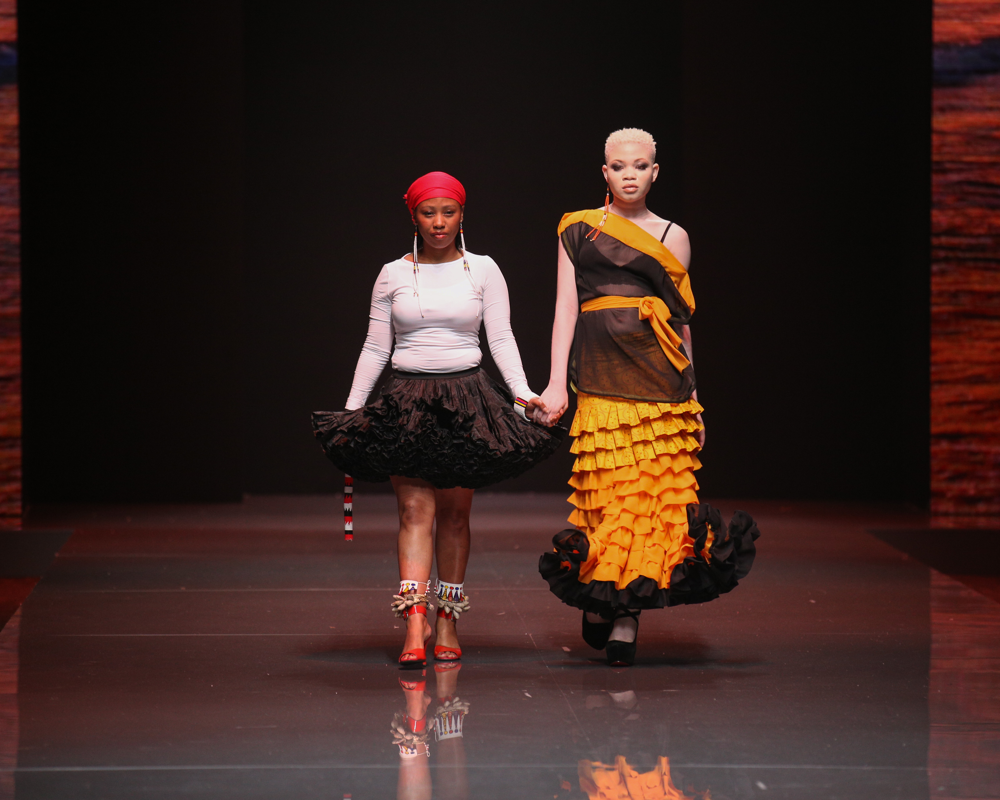

Durban based ladies-wear designer, Pinky Dlamini is the owner and creative director of brand Modesta which is known for its elegant, timeless and contemporary style that perfectly suits today’s busy women. Dlamini was inspired to join the fashion industry when she became fascinated with the process of taking an idea and bringing it to life in the form of sketch before translating it into a completed garment through the use of the fabric, trimmings and technical skill. She obtained a National Diploma in Fashion obtained from Durban University of Technology (DUT). As her designs continue to mature, she remains inspired by South Africa’s diverse cultures and traditions, different tribes, lifestyles and everyday life. She is captivated by layers of fabrics, African and tribal prints, bead work and embellishments which help provide the colourful, afrocentric palette that is evident in.
Cultures and traditions of our beautiful multicultural country are the driving forces behind our brand Modesta
We have been participants at:
• Darkchild Brandz Fashion and Jewellery Extravaganza 2009 – 2010.
• KwaNdengezi Sports, Arts and Culture Youth Festival 2010 (community event).
• Interpret Durban Design Contest 2011.
• Helped Grade 10 Arts and Culture class of Margot Fontaine Secondary School with their Fashion Story Board Project (in Klaarwater, Mariannhill).
• Durban Business Fair 2011 – 2012
• Cape Town Design Indaba 2013.
• KwaZulu-Natal Art and Business Exhibition, in Moscow Russia 2013.
• Durban Fashion Fair 2013 – 2014.
• DFF Young black owned company operating from KwaNdengezi Township in Durban. Passion for fashion, diverse Fashion Development Program Intern 2014.
• International Design Internship Program, Milan Italy 2014.
• Taking It Back to Ekasi 2015. (Modesta initiative youth & community Arts event – giving back).
• Essence Festival Durban 2016.
Black owned, sole propriety, with part time employees.
• To be the best supplier of high quality African inspired everyday & occasional women’s wear.
• To tell our African stories to the world through our fashion craftsmanship of garments
Young black owned company operating from KwaNdengezi Township in Durban. Passion for fashion, diverse cultures and traditions of our beautiful multicultural country are the driving forces behind our brand Modesta